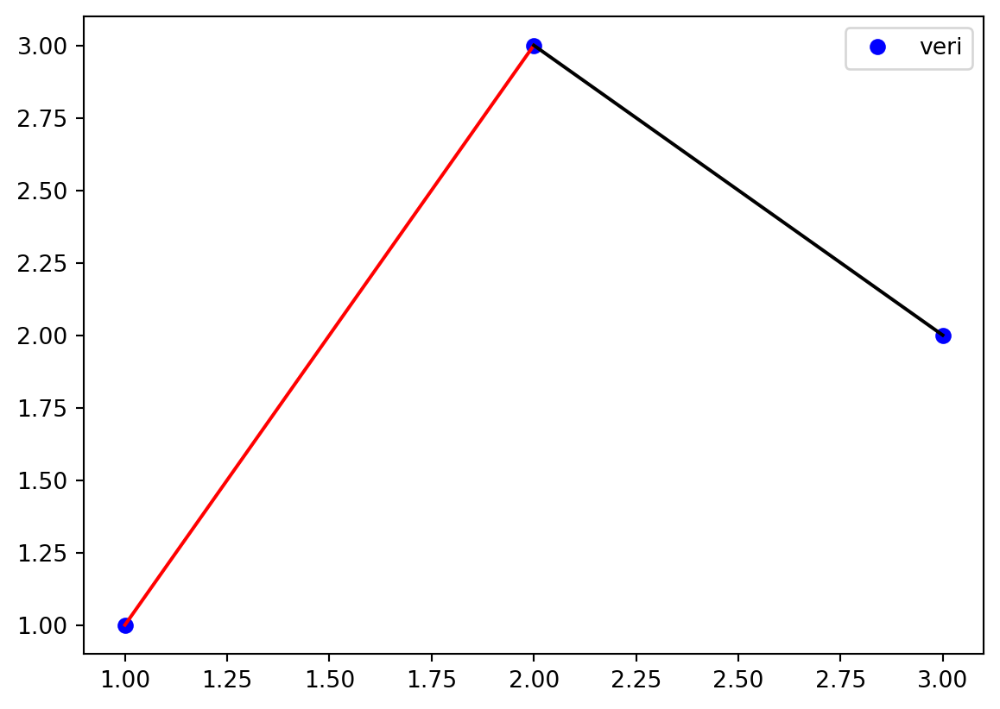
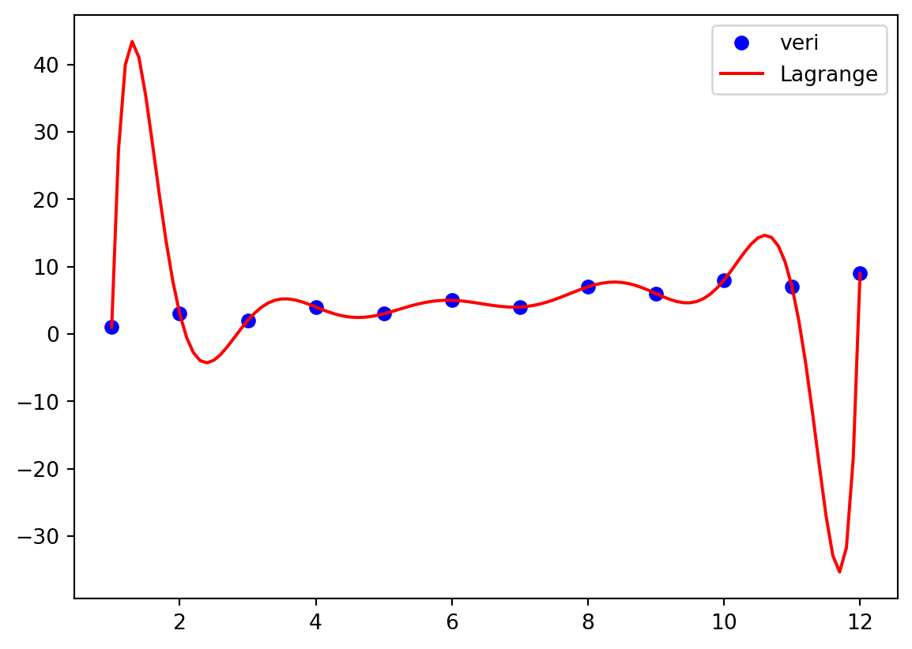
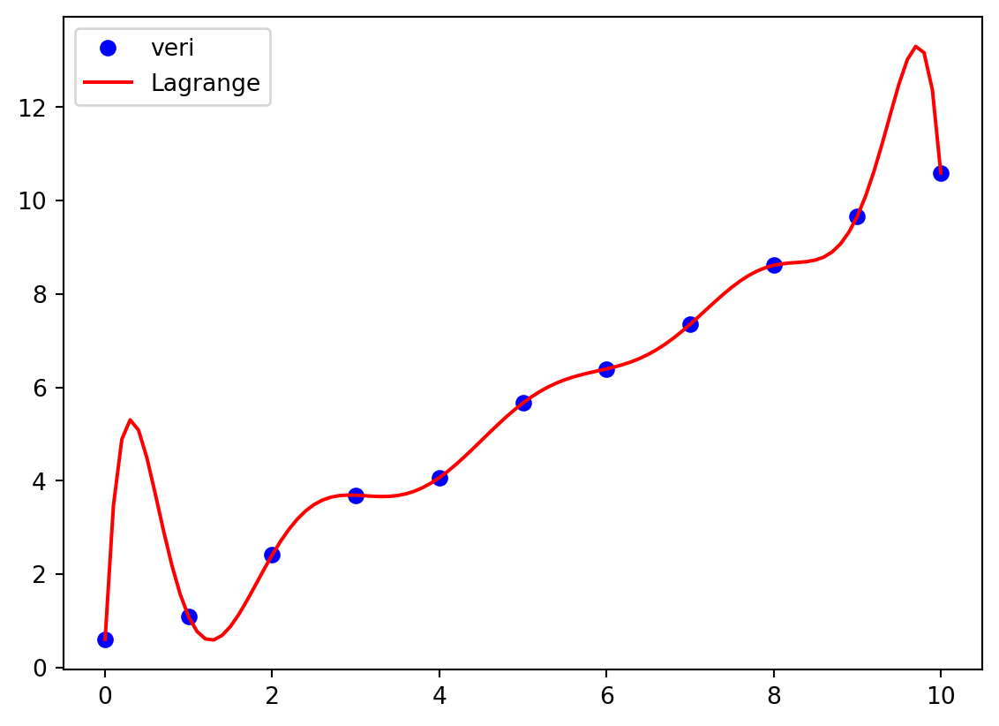

\[
a_{n} \equiv \nabla^{n} y_{i} \equiv \frac{\nabla^{n-1} y_{i}-\nabla^{n-1} y_{n-1}}{x_{i}-x_{n-1}} \qquad \text{,} \quad i=n
\] Bu terimlerin çıkarılışını görelim. Örneğin 3 adet veri noktamız olsun. \(P_{2}(x)\) terimini oluşturan \(a_{0}\), \(a_{1}\) ve \(a_{2}\) terimlerini elde edelim.
Burada \(\nabla y_{1}\equiv\frac{y_{1}-y_{0}}{x_{1}-x_{0}}\) tanımlaması yapalım. Ayrıca \(\nabla y_{2}\equiv\frac{y_{2}-y_{0}}{x_{2}-x_{0}}\) tanımlamasını da kullanacağız.
Bu ders kapsamında Neville metodunu incelemeyeceğiz.
Kübik Spline İnterpolasyonu
Doğrusal İnterpolasyon
Veri noktalarını doğrusal olarak birleştirir.
import numpy as npimport matplotlib.pyplot as plt# Veri seti oluşturveri= np.array([[1,1],[2,3],[3,2]])plt.plot(veri[:,0],veri[:,1],'o', label='veri', color='blue')plt.plot(veri[0:2,0],veri[0:2,1], color='red')plt.plot(veri[1:3,0],veri[1:3,1], color='black')plt.legend()plt.show()

Burada iki adet fonksiyon vardır. Birincisi (1,1) ve (2,3) noktasını birleştiren \(f_{1}(x)\) fonksiyonudur. İkincisi ise (2,3) ve (3,2) noktasını birleştiren \(f_{2}(x)\) fonksiyonudur.
\[
f_{1}(x) = 2x-1
\]
\[
f_{2}(x) = -x+5
\]
Bu tip interpolasyonlari parçasal (picewise) interpolasyon çeşididir. Tek bir fonksiyon bulmak yerine noktalar arası fonksiyonlar elde edilir.
Kuadratik İnterpolasyon
Noktalar arasıda kuadratik yani ikinci dereceden fonksiyonlar bulunur.
Kübik Spline İnterpolasyonu
Noktalar arasıda kübik yani üçüncü dereceden fonksiyonlar bulunur.
Spline İnterpolasyonu nedir?
Spline interpolasyonu olabilmesi için fonksiyonların birbirine bağlı ve düzgün olması gerekmektedir. Bunun için fonksiyonların birbirine bağlanması için iki adet kural vardır.
Fonksiyon bağlandığı noktada eşit olsun: \(f_{i}(x_{i}) = f_{i+1}(x_{i})\)
Fonksiyonun türevi bağlandığı eşit olsun: \(f'_{i}(x_{i}) = f'_{i+1}(x_{i})\)
Bu tip kurallar sürekliliği sağlamak için kullanılır. - Türevin sürekli olması demek fonksiyonun teğetinin aniden değişmemesi demektir. - Kübik Spline interplasyonunda ikinci türevler de sürekli olmalıdır. - Kübik Spline interpolasyonunda son noktadaki ikinci türev sıfır olursa o interpolasyona doğal kübik spline (natural cubic spline) adı verilir.
Kübik Spline İnterpolasyonu nasıl yapılır?
Üç nokta alalım. \((x_{0}, y_{0})\), \((x_{1}, y_{1})\), \((x_{2}, y_{2})\). Üç adet nokta varsa iki adet fonksiyon olmalı: \(f_{0}(x)\) ve \(f_{1}(x)\).
Fonksiyonlar kübik yani üçüncü dereceden olmalı.
Fonksiyonlar \(x_{1}\) noktasında eşit olmalı: \(f_{0}(x_{1}) = f_{1}(x_{1})\)
Bu ders kapsamında sizlere kağıt üstünde Verilen noktalar için kübik spline interpolasyonu yapın şeklinde bir soru gelmeyecek. Ancak aşağıdaki örneği yapmanız beklenir.
Örnek
Aşağıdaki fonksiyonların kübik spline olabilmesi için \(a\), \(b\), \(c\) katsayıları ne olmalıdır bulunuz.
import numpy as npimport matplotlib.pyplot as plt# Lagrange Interpolasyonudef lagrange_interpolasyon_tekAraDeger(xVeri, yVeri, xAraTekDeger):''' Lagrange polinomu ile verilen noktalardan geçen polinom hesaplanır. '''# Verilen x datasının boyutu tutulur. n =int(len(xVeri))# =================# Lagrange polinomu hesaplanır. yTekDeger =0.0for i inrange(n): pt =1.0# Kardinal fonksiyonu hesaplanır.for j inrange(n):if i != j: pt= pt* (xAraTekDeger- xVeri[j])/(xVeri[i]- xVeri[j])# Lagrange polinomu hesaplanır. yTekDeger = yTekDeger + yVeri[i]* pt# =================return yTekDeger# Veri seti oluşturveri= np.array([ [1,1], [2,3], [3,2], [4,4], [5,3], [6,5], [7,4], [8,7], [9,6], [10,8], [11,7], [12,9]])# Ara x değerlerini oluşturxYeni= np.arange(veri[0,0], veri[-1,0]+0.1,0.1)yYeni= np.zeros(len(xYeni))for it inrange(len(xYeni)): yYeni[it]= lagrange_interpolasyon_tekAraDeger(veri[:,0],veri[:,1],xYeni[it])# Çizdirplt.close('all')plt.plot(veri[:,0],veri[:,1],'o', label='veri', color='blue')plt.plot(xYeni,yYeni, label='Lagrange', color='red')plt.legend()plt.show()

Alıştırma
Yukarıda verilen Lagrange İnterpolasyon Python kodunu tek bir xAraTekDeger değer için değil xAraDizi için de çalışacak şekilde değiştiriniz.
Çözüm
import numpy as npimport matplotlib.pyplot as plt# Lagrange Interpolasyonudef lagrange_interpolasyon_dizi(xVeri, yVeri, xAraDizi):''' Lagrange polinomu ile verilen noktalardan geçen polinom hesaplanır. '''# Verilen xVeri datasının boyutu tutulur. n =int(len(xVeri))# İstenilen xAraDizi datasının boyutu tutulur. nAra=int(len(xAraDizi))# =================# Lagrange polinomu hesaplanır. yDizi = np.zeros(nAra)for it inrange(nAra): yGecici =0.0for i inrange(n): pt =1.0# Kardinal fonksiyonu hesaplanır.for j inrange(n):if i != j: pt= pt* (xAraDizi[it]- xVeri[j])/(xVeri[i]- xVeri[j])# Lagrange polinomu hesaplanır. yGecici = yGecici + yVeri[i]* pt yDizi[it]= yGecici# =================return yDizi# Veri seti oluşturveri= np.array([ [1,1], [2,3], [3,2], [4,4], [5,3], [6,5], [7,4], [8,7], [9,15], [10,8], [11,7], [12,9]])xVeri= np.arange(0, 11, 1)yVeri= np.arange(0, 11, 1)+ np.random.rand(len(np.arange(0, 11, 1)))*0.8veri=np.zeros((len(xVeri),2))veri[:,0]=xVeriveri[:,1]=yVeri# Ara x değerlerini oluşturxYeni= np.arange(veri[0,0], veri[-1,0]+0.1,0.1)yYeni= lagrange_interpolasyon_dizi(veri[:,0],veri[:,1],xYeni)# Çizdirplt.close('all')plt.plot(veri[:,0],veri[:,1],'o', label='veri', color='blue')plt.plot(xYeni, yYeni, label='Lagrange', color='red')plt.legend()plt.show()

Scipy Kütüphanesi
scipy kütüphanesinin içerisindeki interpolate alt modülü içinde lagrange fonksiyonu bulunur. Bu fonksiyonu kullanarak Lagrange interpolasyonu yapın. Aynı interpolate alt modülü içerisinde tek doğrusal interpolasyon için interp1d fonksiyonu bulunur. Bu fonksiyonu da kullanarak tek doğrusal interpolasyon yapın.